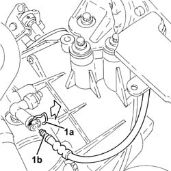
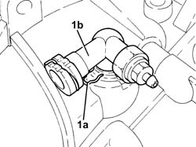

1820B36 THREE-WAY CONNECTOR ON CLUTCH SLAVE CYLINDER - R.R.
- Path
- Procedures > 18 CLUTCH UNIT > 1820 CLUTCH RELEASE CONTROLS > 1820B HYDRAULIC CLUTCH SYSTEM > 1820B36 THREE-WAY CONNECTOR ON CLUTCH SLAVE CYLINDER - R.R.
- Kind
- repair procedure (removal / refitting; the operation number is the code)
- Applies to
- engines: 2.2, 1.9 JTD 8v, 1.9 JTD 16v; all production periods
- Interactive page
- https://sloeber94.github.io/elrnDB-fCrm/en/#/194000433
Applies to: engines: 2.2, 1.9 JTD 8v, 1.9 JTD 16v; all production periods
 Removing
Removing
 Refitting
RefittingOp. 5530B52 BATTERY SUPPORT/DRIP TRAY - R.R
- Replace the brake-clutch fluid reservoir plug using the tool.
Tool | Description | Function | Validity |
|---|---|---|---|
2000001400 | Plug | Brake/clutch fluid reservoir cap |
1. Release the retaining clip (1a) and disconnect the pipe (1b) between the damper and the clutch operating cylinder (1b), operating cylinder side.

Applies to: engines: 2.2, 1.9 JTD 8v, 1.9 JTD 16v; all production periods
1. Release the retaining clip (1a) and remove the three-way connector (1b) from the clutch hydraulic actuator.

Applies to: engines: 2.2, 1.9 JTD 8v, 1.9 JTD 16v; all production periods
Refitting
Removing- Place the clutch hydraulic actuator connector in its housing and secure it using the retaining clip.
- Connect the pipe between the damper and clutch operating cylinder, operating cylinder side and secure it using the retaining clip.
- Replace the brake-clutch fluid reservoir plug using the tool.
Tool | Description | Function | Validity |
|---|---|---|---|
2000001400 | Plug | Brake/clutch fluid reservoir cap |